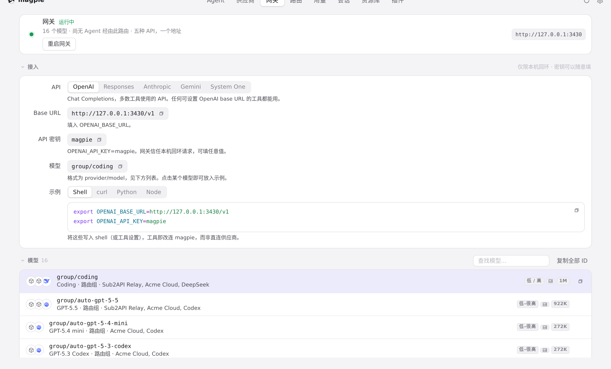
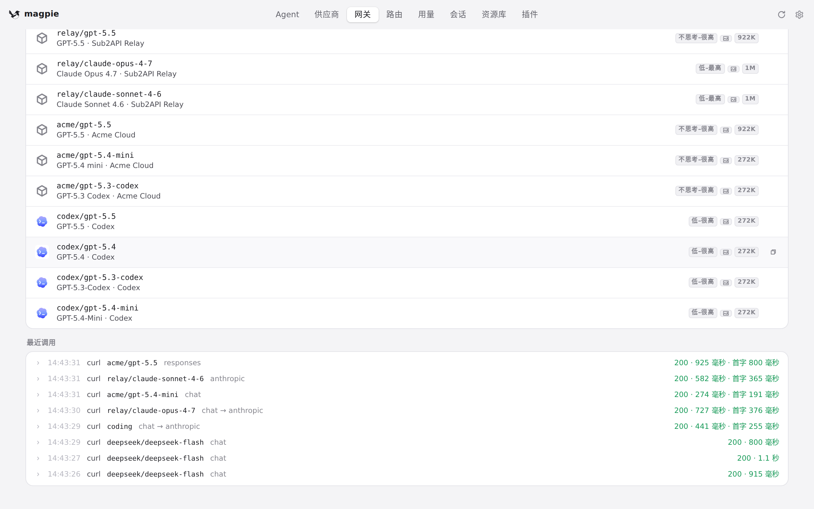
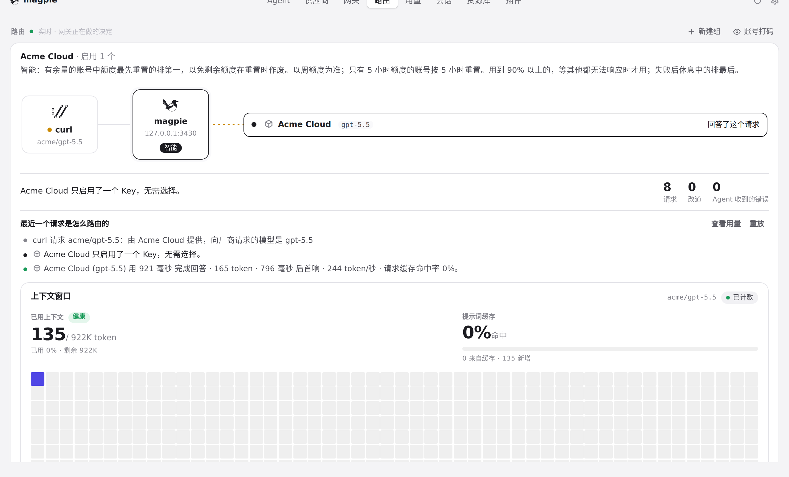
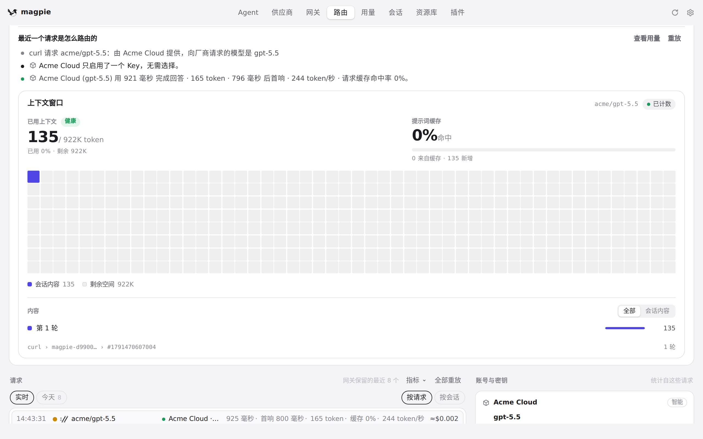

#1213 界面预览
commit be77709 · 回到 PR · 只改 app.js：用鼠标按住页面自己的滚动条（指针落在 .view 的滚动条带内）时把它记为一次读者的滚动，拖动期间的 scroll 不再被「回到读者位置」机制拉回；按下滚动条同时放开点击后的 4 秒保持，并在松手后再给读者的窗口留 250ms，接住 WebKit 松手之后才到的最后几次 scroll。
红线是鼠标走过的轨迹，红色圆环是一次点击；底部文字是这一步在做什么。空格暂停，← → 逐段查看。

网关页：页面自己的滚动条 · 网关页顶部：页面比窗口高，右侧是这一页的滚动条

网关页：页面自己的滚动条 · 同一个页面滚到下方之后的位置

点击页面里的文字之后再滚动 · 路由页顶部：右侧也是它自己的滚动条

点击页面里的文字之后再滚动 · 点击之后滚到下方上下文窗口的页面